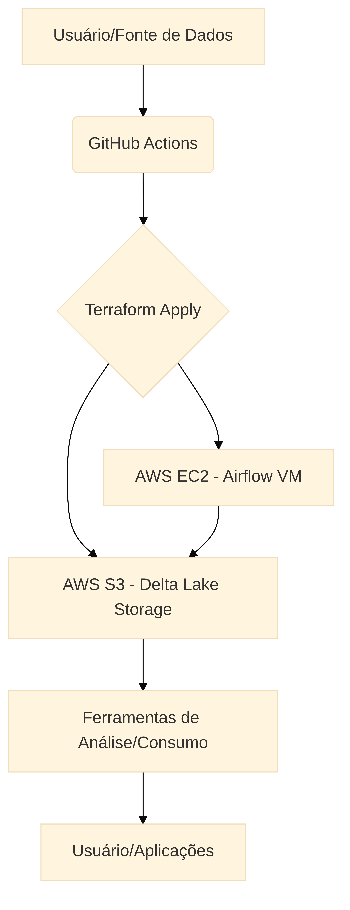

Este projeto tem como objetivo demonstrar a construção de um ambiente de Datalake na Amazon Web Services (AWS), utilizando exclusivamente os recursos do Free Tier. O foco é aprender e experimentar com ferramentas de engenharia de dados open source, como Python, Apache Spark e Delta Lake, orquestradas pelo Apache Airflow.
A infraestrutura é provisionada de forma automatizada utilizando Terraform e GitHub Actions, garantindo um ambiente consistente e replicável. Os principais componentes incluem:
O diagrama abaixo ilustra o fluxo de dados e a interação entre os componentes do Datalake:
O processo de engenharia de dados neste ambiente segue as seguintes etapas:
Com mais de 7 anos de experiência em engenharia de dados, Amado Roque é um profissional focado em projetar e executar soluções de dados robustas que aprimoram insights de negócios e eficiência operacional. Possui proficiência em SQL, Python e plataformas de nuvem como AWS, Databricks e GCP, demonstrando forte capacidade de transformar dados complexos em estratégias acionáveis para organizações.
Sua experiência inclui a liderança de equipes de engenheiros de dados, integração de APIs e dispositivos, garantia de governança de dados, e a construção de infraestruturas de datalake em ambientes como Databricks e Google Cloud Platform. Amado também possui expertise em orquestração de pipelines com Databricks Workflows e Apache Airflow, além de otimização de custos e performance em ambientes de nuvem.
Contato: amado.roze@gmail.com | LinkedIn